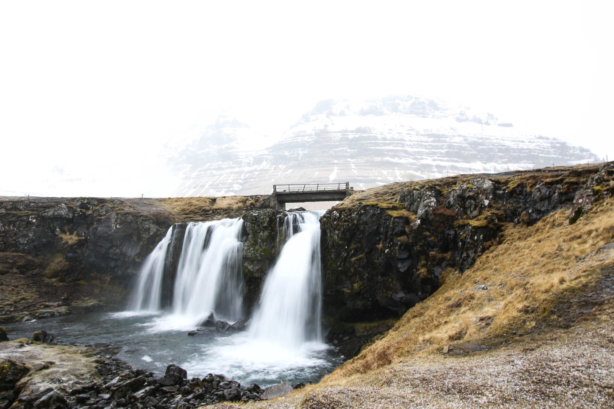
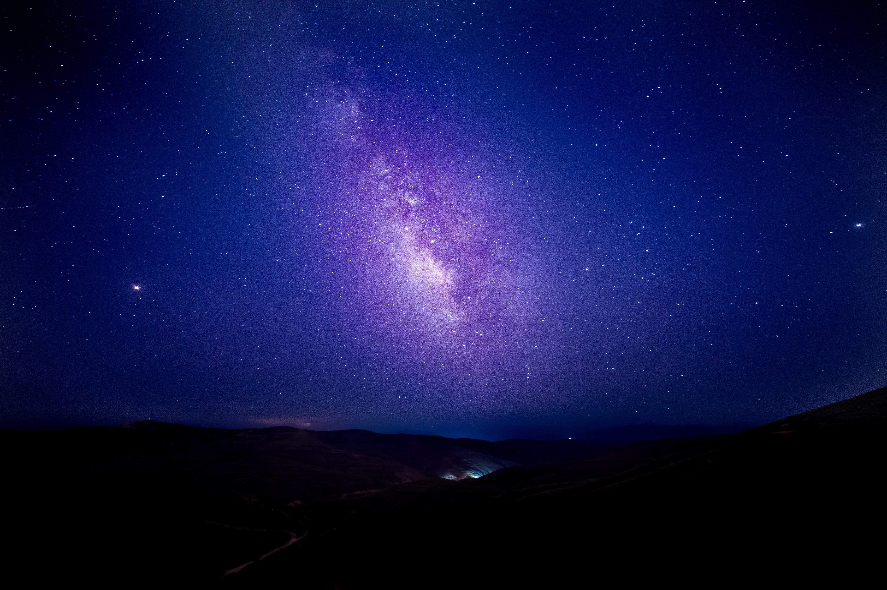
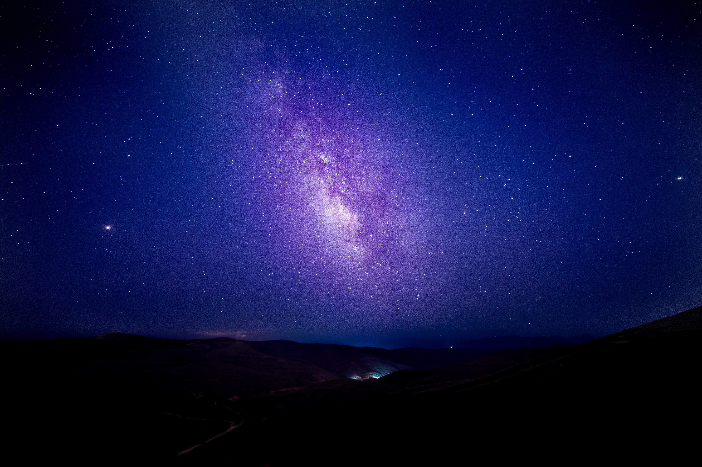

FOTOS DE PAISAJES
by fotógrafos aficionados
-

- 


Las fotografías nocturnas más premiadas y reconocidas, en su mayoría, son aquellas que han sido planificadas, ya que las imágenes nocturnas más naturales, en cuestión de la ausencia de luz, son en lugares poco poblados, paisajes que no todas las personas tiene la posibilidad de conocer personalmente, ya que sólo fotógrafos aventureros se adentran ahí.
Por ejemplo, cuando hay una lluvia de estrellas, o el solsticio de verano, luna llena, etc., son momentos ideales para poner en práctica todo lo que sabemos respecto a la fotografía nocturna.


 
